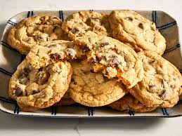

Cookies

Description
A cookie, or a biscuit, is a baked or cooked snack or dessert that
is typically small, flat and sweet. It usually contains flour, sugar,
egg, and some type of oil, fat, or butter. It may include other
ingredients such as raisins, oats, chocolate chips, nuts, etc.
Ingredients
- Flour
- Eggs
- Butter
- Sugar
- Baking Soda
- Vanilla
- Water
- Salt
- Chocolate Chips
Steps
- Beat the butter and sugar, and then the beat in the eggs and vanilla
- Dissolve the baking soda in hot water, then add to the mixture
- Stir in the flour and chocolate chips
- Form balls of the dough approximately a half inch in diameter
- Place dough onto a prepared baking sheet, spacing them out an inch apart